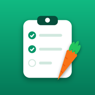

Dishdeck
Plan posiłków i lista zakupów · Meal plan & grocery list
Pomoc
Dishdeck pozwala zapisywać przepisy w grupach, importować jadłospis od dietetyka z pliku Word (.doc), układać plan tygodnia i generować z niego listę zakupów pogrupowaną według działów sklepu. Działa offline, bez konta.
Masz pytanie albo znalazłeś błąd? Napisz w zgłoszeniach na GitHubie.
Support
Dishdeck keeps your recipes in groups, imports your dietitian's meal plan from a Word file (.doc), lays out a weekly plan and turns it into a shopping list grouped by store aisle. It works offline, with no account.
Questions or a bug? Open an issue on GitHub.